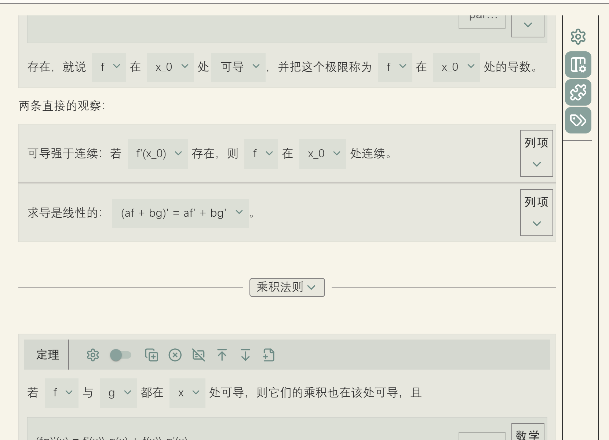
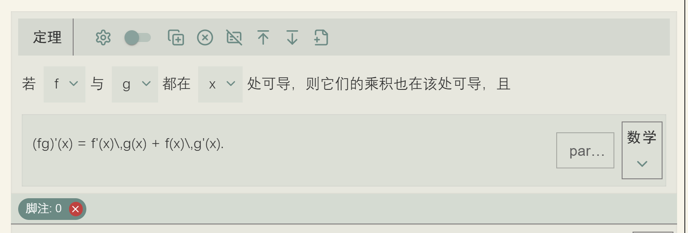
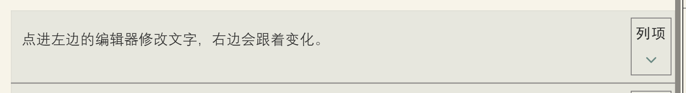
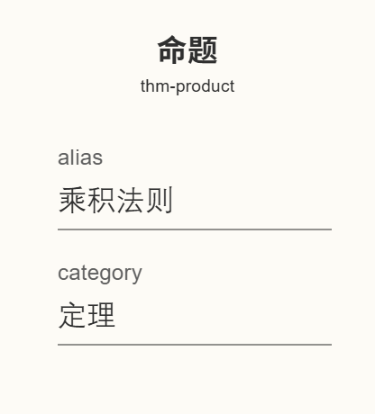
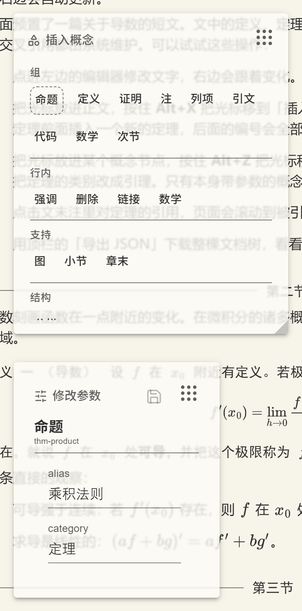

编辑界面
这一页把默认编辑器的界面逐块讲开：屏幕怎么划分，每个节点身上那排按钮各自做什么， 参数怎么改，抽象节点长在哪里，侧边栏有什么，以及两个浮动面板和它们那个必须由你摆放的容器。
屏幕的划分
默认编辑器把自己拿到的矩形区域分成左右两块。左边约九成宽度是纸张，也就是文档内容本身； 右边剩下的窄条是侧边栏，放的是作用于整个文档的按钮。
除此之外还有两个浮动面板，「插入概念」和「修改参数」。它们不参与上面的左右划分， 而是浮在界面上层，可以拖动和缩放。它们浮在哪一片区域上由你决定，这一点在本页最后一节讲。

纸张上的节点
纸张上的每个概念节点都带着自己的一排按钮。按钮的摆法有两种： 平铺在节点顶部的一条应用栏里，或者收进右侧一个竖条、折叠在一个箭头后面。 选哪种由这个概念用的渲染器工厂决定，编辑渲染器工厂那一页会讲。


不论哪种摆法，按钮本身是同一组八个：
| 按钮 | 作用 |
|---|---|
| 设置参数 | 打开参数抽屉，就地编辑这个节点的参数 |
| 接排开关 | 切换节点的 relation，也就是它与上一个节点是分离还是接排 |
| 复制此节点 | 连同整棵子树一起复制 |
| 删除组件 | 删除节点及其内容 |
| 解除组件 | 删除节点本身但保留其中的内容，也就是俗称的软删除 |
| 向上添加段落 | 在节点前面插入一个空段落 |
| 向下添加段落 | 在节点后面插入一个空段落 |
| 新建抽象 | 给这个节点挂一个抽象节点，比如脚注 |
「接排开关」对应的是教程第 1 章讲过的 relation 属性。两个相邻的同类节点，
分离时各自独立编号、中间留出间距；接排时后一个紧贴前一个，视觉上连成一体。
列举一串条目时通常要接排，两个不相干的定理之间则要分离。
「向上 / 向下添加段落」解决的是树形文档特有的一个麻烦：两个块级节点直接相邻时， 它们中间没有可以放光标的位置，也就无法插入新内容。这两个按钮凭空造出这样一个位置。
「解除组件」是删除的另一种：删掉「它是一个定理」这件事，但把里面的内容原地留下，变成普通段落。
参数抽屉
点「设置参数」会从节点里展开一个抽屉，把这个节点的全部参数列出来。

alias 是它的别名，category 决定它算定理还是引理。
每一项渲染成什么控件，由参数的类型和附加字段决定：
| 参数 | 控件 |
|---|---|
带 choices 字段 | 下拉选择，选项就是 choices 数组 |
string | 文本输入框 |
number | 数字输入框 |
boolean | 开关 |
注意判断顺序：choices 优先于类型。也就是说一个类型为 string
但带了 choices 的参数会渲染成下拉框而不是输入框。教程第 7 章里那个「命题」概念
就是靠这一点，把 category 做成了定理、引理、推论的下拉选择。
被二级概念用 fixed_override 固定的参数不会出现在这里，因为写作者本来就不该改它们。
这也是固定参数和默认参数的实际区别所在：前者是概念的一部分，后者只是一个起点。
抽象节点
挂在节点上的抽象节点（比如脚注）显示为节点下方的一排小标签。点其中一个， 会打开一个浮动的编辑窗口来编辑它。这个窗口是一个独立的编辑器组件， 和主编辑器共用同一个编辑器核心，所以在脚注里能用的概念和正文里完全一样。
抽象节点之所以要单开一个窗口，是因为它自身就是一棵完整的小文档， 可以有自己的段落和定理，正文的行间容纳不下。
侧边栏
侧边栏上固定有四个按钮，它们的作用范围是整个文档或者整个界面，而不是某一个节点：

| 按钮 | 作用 |
|---|---|
| 根节点参数 | 编辑文档根节点的参数，比如全文标题 |
| 参数区域 | 开关「修改参数」面板 |
| 概念区域 | 开关「插入概念」面板 |
| 显示提示 | 按键提示的总开关，默认打开 |
最后一个控制的是快捷键提示要不要出现。它默认是打开的，此时单独按住 Alt 片刻， 各个按钮旁边就会浮现出对应的按键；关掉之后按住 Alt 也不再有提示。 熟悉快捷键之后可以关掉它，眼前会清静一些。这套提示机制在 键盘操作那页详细讲。
你自己追加的按钮排在这四个之后，中间用一条分隔线隔开， 追加的方法见定制默认编辑器。
两个浮动面板
「插入概念」面板列出当前可用的全部二级概念，按节点种类分节排列，点一个就在光标处插入。 「修改参数」面板显示光标所在概念节点的参数，改完点保存生效。 两者都可以拖动位置、拉动右下角改变大小，位置和大小记在浏览器的本地存储里， 下次打开还在原处。

侧边栏上有两个按钮分别控制这两个面板的显示与隐藏。
AreaContainer：唯一需要你自己摆放的部件
两个面板由编辑器组件在内部渲染，但它们的定位依赖一个外部的容器：
面板把自己定位在这个容器的坐标系里，拖动时也不会被拖出容器的范围。
这个容器就是 AreaContainer，它需要你自己渲染。
AreaContainer，两个浮动面板不会显示。
这不是报错，是安静地什么都不发生，很容易让人以为是别处出了问题。
AreaContainer 渲染出来是一个绝对定位、撑满父元素的空盒子，没有任何外观。
换句话说，你是在用它划定一块矩形，告诉面板「你们可以在这个范围里活动」。
把它放在哪里，取决于你希望面板浮在哪一片区域上。
如果编辑器和印刷成品左右并排，把容器放在印刷那一侧是个不错的选择，
这样面板浮在成品上方，不遮挡正在编辑的文字：
import { AreaContainer, DefaultEditorComponent, DefaultPrinterComponent } from "@project-callio/calliotext"
<Box sx={{position: "relative", width: "100%", height: "100%"}}>
<Box sx={{position: "absolute", left: 0, width: "50%", height: "100%"}}>
<DefaultEditorComponent editorcore={editor_core} />
</Box>
<Box sx={{position: "absolute", left: "50%", width: "50%", height: "100%"}}>
{/* 容器铺满印刷栏：面板的活动范围就是这半边。 */}
<Box sx={{position: "absolute", top: 0, left: 0, width: "100%", height: "100%"}}>
<AreaContainer />
</Box>
<DefaultPrinterComponent printer={printer} root={tree} />
</Box>
</Box>